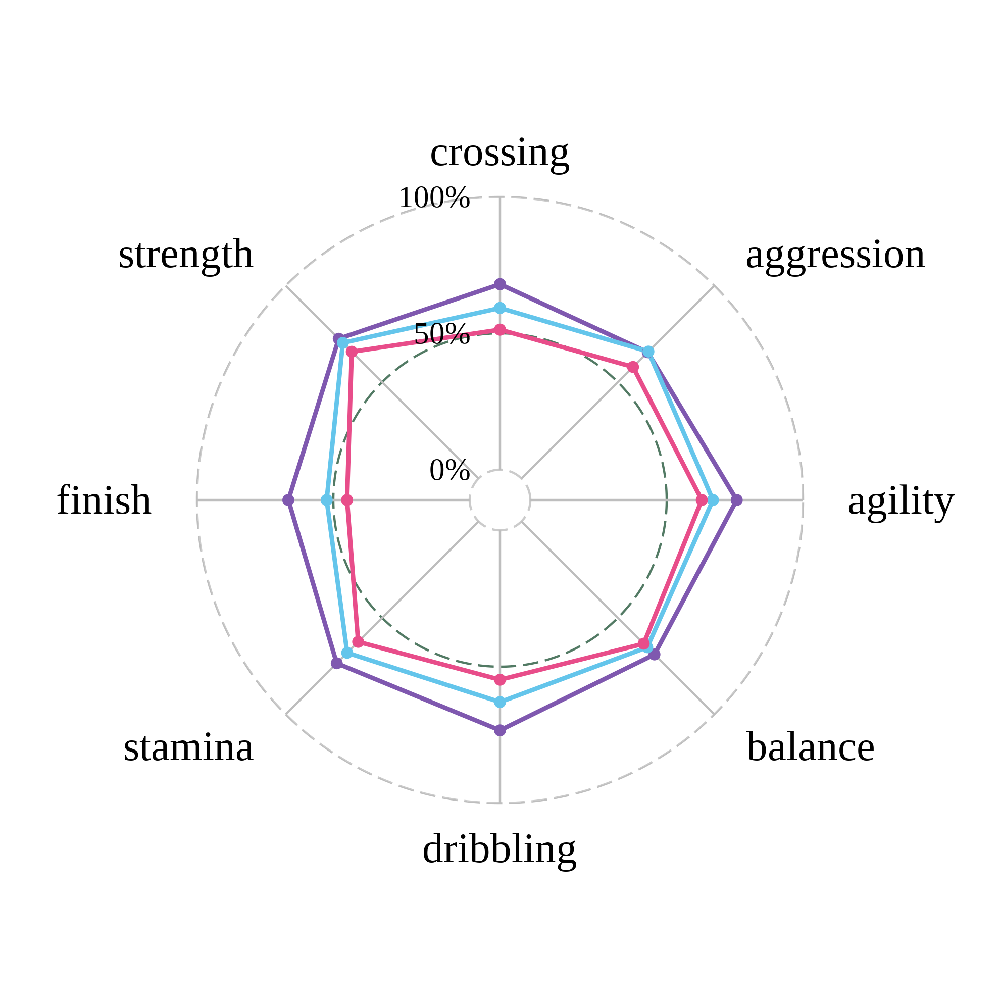
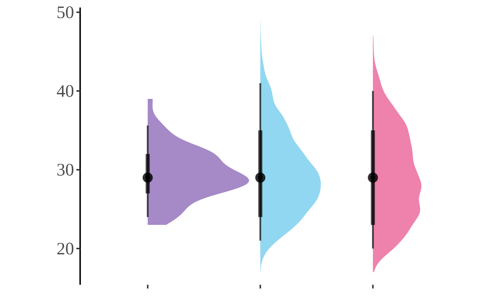
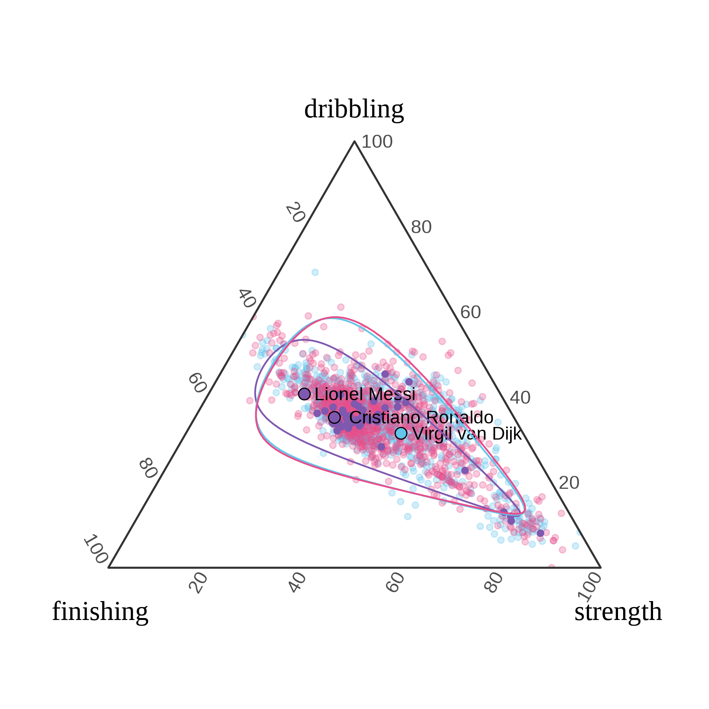
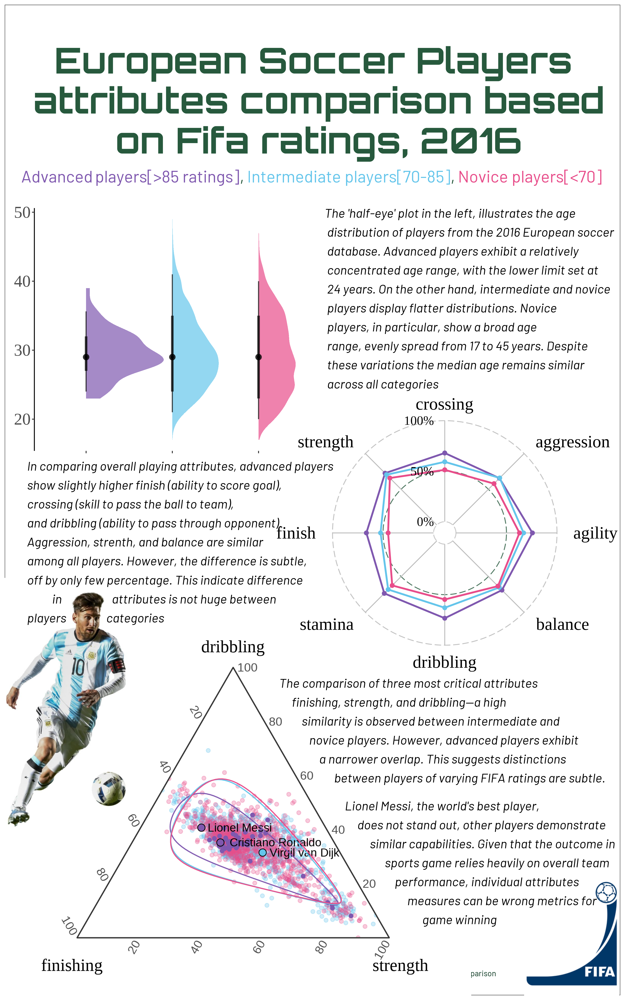

{kind=link}
#read the csv file
player_attr <- read_csv(here("featured_projects/data_viz/player_attr.csv"))Soccer players attributes comparison: Conclusion from Data visualization
Data Viz
Introduction about the project
This project aims to create infographics comparing attributes of soccer players, sourced from a European soccer database available on Kaggle. The database contains data on over 10,000 players. Using R exclusively, the visualization focuses on attributes such as shooting, finishing, strength, age, etc. All tasks, from fetching the data to adding text and aligning elements, are performed using R packages. Special credit is given to the UFO alien template, accessible at UFO link
Important Note: The ggplot package version used in this project is 3.4.4, and ggtern version 3.0.0 is utilized. It’s crucial to consider that modern versions of ggplot might conflict when used in combination with other packages employed here.
Data Wrangling
The datasets available on Kaggle are stored in SQLite and require joins to build a complete dataset. However, for this project, data from a single table is sufficient. Nevertheless, for future use, datasets will be combined if necessary.
The dataset includes a column named “overall ratings,” representing the FIFA average rating from 2008 to 2016. This column will be utilized to categorize players into Advanced, Intermediate, and Novice. It’s important to note that the term “Novice” is used for classification purposes and does not undermine any players; it’s simply a classification based on personal preference.
#---classify the players based on their overall rating player_attr <- player_attr %>% mutate(player_class = ifelse(overall_rating >= 85, "Advanced", ifelse(overall_rating >= 70 & overall_rating < 85, "Intermediate", "Novice")))The project will compare the following attributes of players. The hypothesis is whether there exists a difference in attributes between the world’s renowned top performers and players who do not enjoy the same level of popularity.
# filter required columns from the dataset player_data <- player_attr %>% select(player_name, player_class, crossing, agility, dribbling, finishing, aggression, balance, strength, stamina)From the database containing over 10,000 players, only a subset is required. A random sample of 1000 players will be drawn from the intermediate and novice categories, while all players from the advanced category will be included, given that there are already fewer than 1000 advanced category players.
#---filter only good players from the player_data datase good_players <- player_data %>% filter(player_class == "Advanced") #---filter average and bad players from the player_data dataset set.seed(123) average_bad_players <- player_data %>% filter(player_class != "Advanced") %>% #sample only 1000 from average and bad players group_by(player_class) %>% #randomly select 1000 players from each class and always include the player Van dijk in the sample sample_n(1000) #good defender van dijk van_dijk <- player_data %>% filter(player_name == "Virgil van Dijk") #---combine the good_players and average_bad_players datasets clean_player_data <- bind_rows(good_players, average_bad_players, van_dijk)PLot1: Radar plot for common attributes comparison
#summarize the data and plot the summary output with radar chart radar_data <- clean_player_data %>% group_by(player_class) %>% select(-player_name, player_class) %>% summarise_all(mean, na.rm = TRUE) %>% arrange(ifelse(player_class == "Advanced", 1, ifelse(player_class == "Intermediate", 2, 3))) %>% #arrange so that corssing, finishing, driblling and agility are away from each other rename("finish"= "finishing") %>% select(player_class, crossing, aggression, agility, balance, dribbling, stamina, finish, strength) #create custom color paletteA colors <- c("#7f58AF", "#64C5EB", "#E84D8A", "#FEB326", "lightblue") radar_plot <- ggradar::ggradar(radar_data, grid.min = 0, grid.max = 100, grid.mid = 50, axis.label.size = 22, label.centre.y = FALSE, group.line.width = 1, gridline.mid.colour = "#27593d", group.point.size = 2, grid.label.size = 20, group.colours = c("#7f58AF", "#64C5EB", "#E84D8A"), background.circle.colour = "white", legend.title = "Players proficiency", legend.text.size = 24, font.radar = "serif") + #make the background theme white theme_void() + #remove y axis label theme(axis.text.y = element_blank())+ #remove x axis label theme(axis.text.x = element_blank())+ #remove all grid lines theme(panel.grid.major = element_blank(), panel.grid.minor = element_blank())+ #remove legend theme(legend.position = "none") #save this as png ggsave(plot = radar_plot, filename = "image/radar_plot.png", height = 6, width = 6, scale = 1.1, dpi= 300) #Include the radar plot in the rmd #knitr::include_graphics("image/radar_plot.png") knitr::include_graphics("static_image/radar.png")
Plot2: Stat-halfeye plot for age distribution
library(ggdist) ##eye plot #plot lefeye plot using stat_halfeye data <-player_attr %>% mutate(birthday = as.Date(birthday)) %>% mutate(birthday = as.numeric(format(birthday, "%Y"))) %>% #calculate the age mutate(age = 2016 - birthday) #plot the half eye eye_plot <- ggplot(data, aes(x = age, y = player_class, fill = player_class))+ stat_halfeye(alpha = 0.7, color = "black") + theme(panel.background = element_blank(), panel.grid = element_blank(), legend.position = "none", plot.background = element_blank(), panel.border = element_blank(), axis.title.x = element_blank(), axis.line.y = element_line())+ theme(legend.position = "none", axis.text = element_text(size = 60), axis.title = element_text(size = 90), text = element_text(family = "serif"), panel.grid.major = element_blank(), panel.grid.minor = element_blank()) + scale_fill_manual(values = colors) + theme(axis.text.x = element_blank()) + coord_flip() + xlab("") + ylab("")+ theme(panel.background = element_blank()) #save as ggplot ggplot2::ggsave(plot = eye_plot, filename = "image/eye_plot.png", height = 3, width = 5, dpi = 450) #include the age plot in rmd #knitr::include_graphics("image/eye_plot.png") knitr::include_graphics("static_image/eye_plot.png")
Plot3: Ternary plot for 3 major attributes comparison
#standarize the clean_player_data for all numeric columns based on min and max value player_standarized <- clean_player_data %>% mutate(across(where(is.numeric), ~scales::rescale(.x, to = c(0, 1)))) # Plot the ternary plot for three attributes: strength, aggression, and balance #Plot the ternary plot for three attributes: strength, aggression, and balance tern_plot <- ggtern::ggtern(player_standarized, aes(x = finishing, y = dribbling, z = strength, color = player_class)) + geom_point(alpha = 0.3)+ theme_bw()+ scale_color_manual(values = colors)+ # Highlight all points with advanced players geom_point(data = player_standarized %>% filter(player_class == "Advanced"), aes(x = finishing, y = dribbling, z = agility))+ # Add labels for popular players of presnt data geom_text(data = player_standarized %>% filter(player_name %in% c("Lionel Messi", "Cristiano Ronaldo", "Virgil van Dijk")), aes(label = player_name),alpha = 1, hjust = -0.1, hjust = 0.5, size = 12, color = "black")+ # Color the points for Messi and Ronaldo geom_point(data = player_standarized %>% filter(player_name %in% c("Lionel Messi", "Cristiano Ronaldo", "Virgil van Dijk")), aes(x = finishing, y = dribbling, z = strength, fill = player_class), color = 'black', shape = 21, size = 3)+ #manual fill color for the highlighted players scale_fill_manual(values = c("Advanced" = "#7f58AF", "Intermediate" = "#64C5EB", "Novice" = "#E84D8A"))+ #remove the legend produced from scale fill manual guides(fill = "none")+ #increase axis text size theme(axis.text = element_text(size = 36))+ theme(axis.title = element_text(size = 52))+ theme(axis.title = element_text(family = "serif"))+ #remove the legend theme(legend.position = "none")+ geom_confidence_tern(breaks = 0.95)+ theme(tern.axis.title.L = element_text(hjust = -.1, vjust = 2), tern.axis.title.R = element_text(hjust = 1, vjust = 2)) #save this as jpg using ggsave with name tern_plot ggsave(plot = tern_plot, filename = "image/tern_plot.png", height = 6 , width = 6, dpi = 300) #Include the ternary plot in the rmd #knitr::include_graphics("image/tern_plot.png") knitr::include_graphics("static_image/tern_plot.png")
Infographics:aesthetics buildup
This segment and beyond involves, creating text, plots, base plots, etc aesthetics for the final infographics. Most of these are derived from UFO plot, as mentioned in the introduction of this document.
#specify text size and fonts alien <- c('#47fcea', '#3c6478', '#548687', '#17bd52', '#679d76', '#3e6f50', '#27593d') txt <- alien[7] bg <- 'black' # '#010101' accent <- txt sysfonts::font_add("fa-brands", regular = "data/font/fa-brands-400.ttf") font_add("fa-solid", regular = "data/font/fa-solid-900.ttf") font_add_google("Orbitron", "orb") font_add_google("Barlow", "bar") showtext_auto() ft <- "orb" ft1 <- "bar" # 🔡 text -------------------------------------------------------------------- mastodon <- glue("<span style='font-family:fa-brands; color:{accent}'></span>") twitter <- glue("<span style='font-family:fa-brands; color:{accent}'></span>") github <- glue("<span style='font-family:fa-brands; color:{accent}'></span>") floppy <- glue("<span style='font-family:fa-solid; color:{accent}'></span>") space <- glue("<span style='color:{bg};font-size:1px'>'</span>") space2 <- glue("<span style='color:{bg}'>--</span>") caption <- glue("{mastodon}{space2}@sujan@{space}sujandon.org{space2}{twitter}{space2}@sujan{space2}{github}{space2}sbgithubhm/tidytues{space2}{floppy}{space2}European players attributes comparison")# Define subtitle with HTML formatting for colors subtitle <- "<span style='color:#7f58AF'>Advanced players[>85 ratings]</span>, <span style='color:#64C5EB'>Intermediate players[70-85]</span>, <span style='color:#E84D8A'>Novice players[<70]</span>" #---------------copy of UFO plot g_base <- ggplot() + labs( title = "European Soccer Players \n attributes comparison based \n on Fifa ratings, 2016", subtitle = subtitle, caption = caption ) + theme_void() + theme( text = element_text(family = ft, size = 36, lineheight = 0.3, colour = txt), plot.background = element_rect(fill = "white", colour = bg), plot.title = element_text(size = 128, face = "bold", hjust = 0.5, margin = margin(b = 10)), plot.subtitle = element_text(family = ft1, hjust = 0.5, margin = margin(b = 20), color = "#27593d", size = 60), plot.caption = element_markdown(family = ft1, colour = colorspace::darken(txt, 0.5), hjust = 0.5, margin = margin(t = 20)), plot.margin = margin(b = 20, t = 50, r = 50, l = 50), axis.text.x = element_text())+ theme( plot.subtitle = element_markdown() ) # # quote 1 for the distribution quote1 <- ggplot() + annotate("text", x = 0, y = 1, label = "The 'half-eye' plot in the left, illustrates the age \n distribution of players from the 2016 European soccer \n database. Advanced players exhibit a relatively \n concentrated age range, with the lower limit set at \n 24 years. On the other hand, intermediate and novice \n players display flatter distributions. Novice \n players, in particular, show a broad age \n range, evenly spread from 17 to 45 years. Despite \n these variations the median age remains similar \n across all categories", family = ft1, colour = 'black', size = 16, hjust = 0, fontface = "italic", lineheight = 0.4) + xlim(0, 1) + ylim(0, 1) + theme_void() + coord_cartesian(clip = "off") quote2 <- ggplot() + annotate("text", x = 0, y = 1, label =" In comparing overall playing attributes, advanced players \n show slightly higher finish (ability to score goal),\n crossing (skill to pass the ball to team), \n and dribbling (ability to pass through opponent).\n Aggression, strenth, and balance are similar \n among all players. However, the difference is subtle,\n off by only few percentage. This indicate difference \n in attributes is not huge between \n players categories", family = ft1, colour = 'black', size = 16, hjust = 0, fontface = "italic", lineheight = 0.4) + xlim(0, 1) + ylim(0, 1) + theme_void() + coord_cartesian(clip = "off") #quote 3 quote3 <- ggplot() + annotate("text", x = 0, y = 1, label = "The comparison of three most critical attributes \n finishing, strength, and dribbling—a high \n similarity is observed between intermediate and \n novice players. However, advanced players exhibit \n a narrower overlap. This suggests distinctions \n between players of varying FIFA ratings are subtle.", family = ft1, colour = 'black', size = 16, hjust = 0, fontface = "italic", lineheight = 0.4) + xlim(0, 1) + ylim(0, 1) + theme_void() + coord_cartesian(clip = "off") quote4 <- ggplot()+ annotate("text", x= 0, y = 1, label = "Lionel Messi, the world's best player,\n does not stand out, other players demonstrate \n similar capabilities. Given that the outcome in \n sports game relies heavily on overall team \n performance, individual attributes \n measures can be wrong metrics for\n game winning", family = ft1, colour = "black", size = 16, hjust = 0, fontface = "italic", lineheight = 0.4) + xlim(0, 1) + ylim(0, 1) + theme_void() + coord_cartesian(clip = "off")Images cannot be loaded into ggplot object directly. it should be convereted to raster object and then it can be overlaid over other ggplot object. The following codes achieves the same thing for different images that are used in the final infographics.
#load the tern image image <- readPNG("image/tern_plot.png") tern_image <- as.raster(image) #radar plot radar <- readPNG("image/radar_plot.png") radar_image <- as.raster(radar) #tern plot image image <- readPNG("image/tern_plot.png") image <- as.raster(image) #lionel messi image messi <- readJPEG("data/images/messi.jpg") messi <- as.raster(messi) #fifa logo image fifa <- readPNG("data/images/FIFA.png") fifa <- as.raster(fifa) #goalpost as image soccer_field <- readJPEG("data/images/soccer-field.jpg") soccer_field <- as.raster(soccer_field)The final graph is produced from the following line. This chunk adds all previously made plots and inset them into appropriate locations, based on preference. This process takes really long time, as finding the exact location from just point values is significantly tedious task. I would suggest using any other graphical interface software to add the quotes and paragraphs, which takes way less time.
# Combine the plots into a single infographic g_final <- g_base + inset_element(fifa, left = 0.9, right = 1.08, top = 0.25, bottom = -0.2)+ inset_element(eye_plot, left = -0.12, right = 0.57, top = 1, bottom = 0.66) + #insert radar plot inset_element(tern_image, left = -0.10, right = 0.80, top = 0.5, bottom = -.1) + inset_element(messi, left = -0.08, right = 0.15, top = 0.50, bottom = 0.15) + inset_element(radar_plot, left = 0.4, right = 1.1, top = 0.81, bottom = 0.31) + #insert quote 1 inset_element(quote1, left = 0.5, right = 1, top = 0.88, bottom = 0.72) + #Insert quote 2 inset_element(quote2, left = -0.07, right = 0.5, top = 0.55, bottom = 0.5) + #insert quote 3 inset_element(quote3, left = 0.41, right = 1, top = 0.31, bottom = 0) + #insert quote 4 inset_element(quote4, left = 0.54, right = 1, top = 0.13, bottom = -0.10)+ plot_annotation(theme = theme( plot.background = element_rect(fill = "white", colour = 'white'))) ggsave(plot = g_final, filename = "infographics_draft.png", height = 16, width = 10)

For further information and the Initial motivation behind project, please follow:
In all sports domain, some players always stands out in popularity. For example, Lebron James in Basketball, Khabib Nurmagomedov in UFC, Serena Williams in Tennis, and Lionel Messi and Cristiano Ronaldo in Soccer. But why do some players always stand out ? Does it relates to their ability to perform better than other players ? This is the central question of this project, which will explore how attributes between advanced and novice category differs.
The project utilizes the soccer dataset from European soccer database, which has data about more than 10000 players and currently open source at Kaggle website. The dataset contains all information about every games played, home goals wins for teams, aways goals wins or losses, individual players attributes like shooting, strength, skill, balance, kicking, crossing, volleying and all other attributes that are described in soccer playing. This project only utilizes the player attributes data and not the team data, and explores the players attributes. The players will first be categorized into advanced, intermediate, and novice based on fifa ranking. Fifa ranking is available for each of those players, which is a average ratings of the overall performance of the player since 2008 season to 2016. All players with average ratings higher than 85 are classified as advanced player, 70-85 as intermediate, and <70 as novice players.
For the infographics design, all information and codes help is archived from UFO infographics template. All designed are done only inside R and no other graphical editing softwares will be used. Three of the graphics: eyeplot, radar plot, and tern plot is used for attributes comparison. The base template will be created with ggplot which will have all other plots overlaid over it. The title and subtitle will be highlighted at the top. The subtitle will explains players and their category. For example: all advanced players in the infographics is represented as purple color, and that thing is shown from how subtitle is highlighted. The colors are chosen neutral in appearance with excellent contrast for quick differentiation. These colors are supposed to be colorblind friendly. The text sizes, themes, background, and spacing are all first defined based on the base template of the infographics. To avoid information overloading, none of the legend and axis are kept, since quick explanation at the paragraph should be sufficient. Some top performers like Lionel messi, Cristiano Ronaldo, and Virgil van Djik, who are some of the most popular players, are highlighted and annotated to contextualize the data. This should help where the worlds famous players stand. All my plots also centers the message about attributes comparison among different category soccer players. For example, the ternary plot will have the circled grouped data based on 95% confidence interval for all categories. This should help where categories overlap. This approach was able to show the high overlapped categories.
The DEI approach is not satisfied for this plot, because in order to understand what player attributes are, an audience should be knowledged about the soccer games. So, this infographics is designed only for soccer fans, and none else. This data-viz project concludes that the difference between advanced and novice category is subtle.